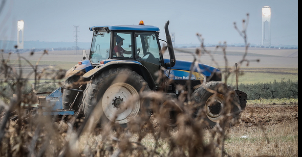
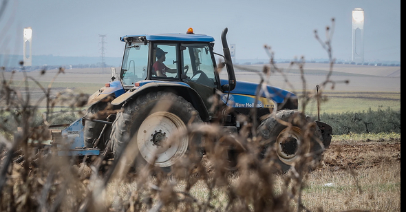

Los Mossos d'Esquadra investigan la muerte de un hombre en Vilanova de la Barca (Lleida). La víctima, un agricultor, fue encontrada por un familiar con un golpe en la cabeza y sangre abundanete e inconsciente en una finca agrícola de este municipio. Los agentes recibieron el aviso sobre las dos de la tarde. Al lugar acudieron varias patrullas policiales y también efectivos del Sistema de Emergencias Médicas.
Los sanitarios no pudieron hacer nada para salvar la vida a la víctima que murió poco después por las heridas que sufrió en la cabeza, según fuentes policiales. Los Mossos buscan a varios sospechosos del crimen que podrían haber huido con el coche del agricultor fallecido, por lo que han activado varios dispositivos para atraparlos. Así, se han realizado controles en varias vías en dirección a Francia.
La División de Investigación Criminal de Lleida de los Mossos se hizo cargo de las pesquisas para saber las causas de este nuevo crimen, que podría ser el segundo en Catalunya este 2024, tras el bebé encontrado muerto en una papelera de La Bisbal. El juzgado de guardia de Lleida ordenó el secreto de las actuaciones.
 
